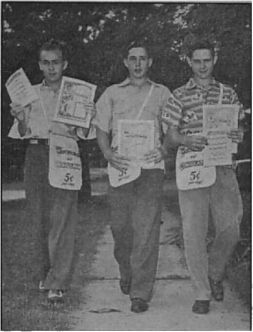
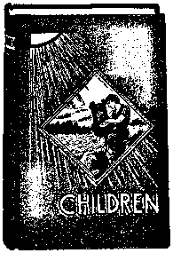

JOURNAL OF FACT, HOPE AND COURAGE
Acts of The Theocracy in New Jersey “The pan-religious world” are moral allies to Hitler
Must All Be “Bom Again”?
Regeneration for Armageddon survivors on earth
Fighting ‘Witnesses’
1942 Theocratic Assembly
Use of Different Bible Translations
One Dollar a Year Vol. XXIII No. 5W
Five Cents a Copy September 2, 1942
$1.25 In Canada and Foreign Countries
Published Every Other Wednesday
Acts of The Theocracy in New Jersey
The Ku Kluxers Also Pro-Hitler
Pseudo-Theocracy in New Jersey
British Comment
Helping Cardinal Hinsley to Understand 13
1942 Theocratic Assembly of Jehovah’s witnesses 14
Education — No Solution but The Theocracy 15
“Thy Word Is Truth”
Presenting “This Gospel of the Kingdom”
Differences in. Bible Translations
Translators — Style of Translating
When to Use a Free Translation
What Japanese Occupation Would Mean
Published evgry other Wednesday by WATCHTOWER BIBLE AND TRACT SOCIETY, INC.
117 Adams St., Brooklyn, N. Y., U. S. A.
Editor Clayton J. Woodworth
Business Manager Nathan H. Knorr
Five Cents a Copy
$1 a year in th© United States $1.25 to Canada and all other countries
NOTICE TO SUBSCRIBERS
Remittances: For your own safety, remit by postal or express money order. When coin or currency is lost in the ordinary mails, there is no redress. Remittances from countries other than those named below may be made to the Brooklyn office, but only by International postal money order.
Receipt of a new or renewal subscription will be acknowledged only When requested. Notice of Expiration is sent with the journal one month before subscription expires. Please renew promptly to avoid loss of copies. Send change of address direct to us rather than to the post office. Your request should reach us at least two weeks before the date of issue with which it is to take effect. Send your old as well as the new address. Copies will not be forwarded by the post office to your new address unless extra postage is provided by you.
Published also in Greek, Portuguese, Spanish, and Ukrainian.
OFFICES FOR OTHER COUNTRIES
England 34 Craven Terrace, London, W.2
Australia 7 Beresford Road, Strathfield, N.S.W. South Africa 623 Boston House, Cape Town
Mexico Calzada de Melchor Ocampo 71, Mexico, D.F. Brazil Caixa Postal 1319, Rio de Janeiro
Argentina Calle Honduras 5646-48, Buenos Aires Entered as second-class matter at Brooklyn, N. Y., under the Act of March 3, 1879.
Kudzu for Poor Soils
♦ The Southern Farmer, Montgomery, Alabama, is in a position to know the facts and declares that kudzu, which grows and thrives on the very poorest of soil, produces more hay per acre than alfalfa does on the very- best of soil. It starts growing with the first warm days of spring and grows rapidly and vigorously until killed by the frost in the late fall. The four cuttings of 2| tons per acre yield 10 tons to the acre in a season. This leguminous plant turns poor or worn-out land into rich new soil. Once planted, 450 plants to the acre, no cultivation is required, after the first year, as the vines take root at the joints. It chokes out all weeds and plants, but if plowed under in the fall it disappears.
Planting Trees by Machinery
♦ It is now possible for four men with a new tree-planting machine to plant about 8,000 trees and shrubs of different species in an eight-hour day. By previous methods it took a crew of twelve men to plant 6,000 trees and shrubs in a day. Hence the new system is four times as efficient as that previously employed. By the previous method each man accounted for 500 trees and shrubs; now each man takes care of 2,000 and the machine itself does all the hardest of the work, including packing of the soil around the roots.
A Million Tons More Sugar
♦ The government had intended to use 1,300,000 tons of sugar in the manufacture of smokeless powder, but a way was found to accomplish the same result by using only 400,000 tons for that purpose. At the time of the change of plans the sugar warehouses all over the country were overloaded with the Cuban product and the odd fact appeared that the housewives were not buying even as much as their ration cards permitted. So there is small chance of a sugar famine.
“And in His name shall the nations hope.”—Matthew 12:21, A.R.V.
Volume XXIII Brooklyn, N. Y., Wednesday, September 2, 1942 Number599
Acts of The Theocracy in New Jersey
NEW JERSEY has been relatively more active than any other state in the Union in persecuting Jehovah’s witnesses. In a single year, in Hudson county alone, 136 of these representatives of God’s kingdom, The Theocracy, were jailed for preaching the good news of that Theocracy. The record of the state as a whole in this connection is most unenviable.
At Elizabeth, a priest, in an unguarded moment, admitted to one of his parishioners that the Hierarchy hate these witnesses. He said they were spoiling his business. The parishioner had been interested in the work of Jehovah’s witnesses when she learned that Peter, supposedly the first pope, was married and that he could not "bless” his own mother-in-law. These incidental points proved to her that there were some things she did not know, and she was anxious to learn. The priest had come to “bless” her house, at so much per “bless”. Such blessings do not cost the priest anything, and, from the record, he is the only one who profits from them.
The officials of New Jersey have been under the thumb of a representative of the Hierarchy to a large extent. There are, however, some exceptions, and one of Jehovah’s witnesses, calling on officials, found at least one who listened attentively as the literature was shown to him. He had read the booklet God and the State and said, “I can see now that Judge Rutherford is right about that; they are making the flag an idol.”
The same publisher of The Theocracy called on a doctor of philosophy who is supervising principal of a large school district. He had received The Watchtower and the booklet Satisfied, and said he found the Watchtower literature very valuable, and appreciated the fact that so much care had been exercised in doing the research work.
Publishers in New Jersey have been zealous in carrying on their work, in spite of the virulent and continued opposition thereto. They conducted “information marches” in which numbers of them carried signs advertising important public lectures, as was done in other states. In sections where no marches were conducted illuminated signs in windows shone out the invitation to seek and find the Truth. One worker, living in a section of religionists, got a cold reception in her efforts to talk to them about God and His purpose for mankind.
She tried to show them the futility of religion by painting a large sign to the effect that “Religion is a snare and a racket” and putting it in her front window, above a sign flashing out an invitation to knowledge and understanding. She did not want her neighbors to miss anything. The howl they put up when the sign appeared showed that they did not miss that, anyway, although they did fail to see the real benevolence back of its appearance. They went to the landlord and told him that if he did not put her out, they would get up a petition against her. The landlord was easily persuaded, as his brother is a Roman Catholic priest. When the Kingdom publisher moved, she left the large sign in the window, in back of which she wrote some Scripture quotations which constituted a fair warning to anyone who destroyed it. The new location from which the publisher carried on was quickly marked by the electrically illuminated sign. The landlady thought it looked nice, and wanted several of the books. She had already read some of the literature, enjoyed it, and passed it on to her niece.
The same publisher made the following report:
I have a friend upon whom I have called many times, inviting her to the meetings, but she never came. One day I went to see her and she told me that she had given a party, inviting the minister and intending to have him baptize the baby while at the house. The minister asked if she and her husband attended church regularly, and, being informed that they did not, said it would be too great a responsibility upon him to baptize the baby at the home. The lady then said she wished I had been there at the time, to talk to the minister about the Bible. I remarked that if I had been there I would have asked him why Jesus waited until He was thirty years of age before He was baptized, and told her that if she would read the Watchtower books she would be able to talk to him herself. [Arietta Rhoads, N. J.]
Those who know Jehovah God are anxious to extend the blessings of The Theocracy to others. One of these blessed ones, Wm. E. Burger, writes as follows:
I am an epileptic, in an institution for such unfortunates, but since I learned of the value of fasting and prayer I have had but one hard attack in over three months. When I feel the spells coming I lift my heart silently to Jehovah God and experience wonderful relief. This cannot be chance; for in this manner I have been relieved of at least twelve attacks.
The way in which the truth came to me was this: My mother obtained The. Harp of God, Reconciliation, and Life, at the door, and placed them on the library table. I picked up The Harp of God, read two chapters, and then declared I would not lay it down until I had finished it. The way in which the reading of this book calmed my nerves and cut down the number of my attacks was a blessing I can never forget.
Now that I have received the truth, and knowing that it is better to give than to receive, I do my best to let other epileptics get informed and stop their worries about eternal torment. When I entered here nine months ago I asked to be excused from attending religious services, and the superintendent physician said that he knew Jehovah’s witnesses preach the true gospel. He gave me the excuse gladly.
While Jehovah’s witnesses seek to extend the blessings of the knowledge of The Theocracy to others, those who are the victims of religion vehemently and viciously oppose them. Early in 1941 New Jersey furnished an example of that mob action- which had been directed against the witnesses in a great many other states. Mrs. Rose Weaver and Mrs. Alma Kessler were attacked by a mob of some fifty demonized men and women while witnessing in the Highland Park section of Gloucester. There a Mrs. Thompson, who lived on Greenwood avenue, struck Mrs. Weaver in the face repeatedly. When the witnesses realized that a mob was forming they tried to get to their car and leave, but the religious ruffians prevented this. When the police arrived they arrested, not the lawless mob, but their victims. This was becoming the regular thing along about that time. The perfectly harmless witnesses were arrested on the charge of “disturbing the peace”. The complaint was signed by the peaceable Mrs. Thompson, a Mr. Dobbins, and another religious person, all of whom lived on fashionable Greenwood avenue.
The trial was held, and the mayor, John Gorman, who is also the police recorder, presided at the trial. The trial almost broke up in a riot. Somebody was again disturbing “the peace”, but it wasn’t the witnesses. There were about forty of the lawless religious mobsters in the courtroom and corridor, and they really conducted and tried the entire farcical case. It was hard to decide who was the most malicious, Mayor Gorman or his fellow religionists. The mayor fumed and raved and cursed as he expressed his hatred for Jehovah’s witnesses and the message, which, however Scriptural and true, he called “dirty, filthy and rotten”, epithets seemingly popular among certain Catholic religionists. He gave a “pep talk” which further infuriated the mob. Then he leaned back in his chair and smiled while those who witnessed against the Theocratic publishers lied to their heart’s content. He did not so much as attempt to maintain order while the religious mobsters wrangled and argued among themselves, several talking at one time. Several of the fanatics attempted to strike the publishers of the Kingdom, but they were gently restrained by one of the officers.
Mrs. Kessler gave a good witness to the truth, reading the statement and running a phonographic recording entitled “Instruction”.
Mayor Gorman, for, all his prejudice, was obliged to dismiss the case, saying that Jehovah’s witnesses had the law on their side and that they carried on their “dirty” work behind the law. He remarked that if the men who formed the Constitution had not made the grave mistake of writing the Bill of Rights Jehovah’s witnesses would be cleaned out immediately. He admitted he was opposed to freedom of speech, and, while he could not meet the demands of the mobsters, they could take the law into their own hands and do what they wanted to do to Jehovah’s witnesses. He opined that even if the highly religious people killed one of these witnesses when calling at their home, no judge or jury would find them guilty. They had made the mistake of not attending to that little matter when they had the opportunity on Greenwood avenue, where he himself also lives. Had he been home, he confided, he would have kicked them under the chin. The mobsters shouted that the next time the witnesses came to their fair (?) city they would mob them right. The mayor then told the publishers of The Theocracy that if any of them came to that city again they came at the risk of their lives. He would give them absolutely no protection.
At this point, one of the mob rushed forward and screamed that he was a Catholic American Legionnaire, and, holding up a Kingdom News (No. 7), called for a vote from the Catholics in the courtroom that they would take this matter in their own hands, since the law gave Jehovah’s witnesses the right to do their work.
Undoubtedly it was under Jehovah’s guidance and protection that twenty of his witnesses, who were present at the “trial”, were permitted to calmly file out of a back door to their cars, leaving the crazed crowd glaring at them and making the vilest threats against the lady witnesses who had tried to enlighten them.
Lawless mob action against Jehovah’s witnesses is one of the ways of showing contempt for The Theocracy. Another is to persecute children who conscientiously refrain from compulsory flag-worship. The following is an instance in point: The board of education of Oaklyn expelled two little witnesses from school because they respected the flag intelligently rather than ceremonially and formally. To salute the flag, an inanimate object, is contrary to their proper prior allegiance to Jehovah God, the Most High. Having expelled the children, the board awaited an opportunity to further persecute them, and in due course sent the following registered letter to their parents:
It has been brought to the attention of the members of the Oaklyn board of education that your daughters were not attending school during the week of November 24. In order that we may have a record, and that it will not be necessary for,me to write again or whenever the girls are absent from the school they are attending, will you be so kind as to give me the name of the school and location of the same? As long as you reside in Oaklyn it is the duty of the board of education to see that all children in the town are being' properly educated.
They looked for an answer, and got it right away, reading as follows:
Your solicitude on behalf of our children’s education is most incredible in view of the fact that you twice expelled our children from the public schools of Oaklyn. Your interest in their education should now cease, unless, and this is more credible, your interest is feigned and your real motive is to persecute them further. We have an exact counterpart of this in the Bible, where Herod pretended interest in the whereabouts of the child Jesus ‘in order to worship him’, while his real purpose was to persecute Jesus to death. In this Herod manifested one of the characteristics of his father, the Devil.
My business is preaching the gospel of Christ’s kingdom [The Theocracy], and it would be in harmony to exhibit your letter do those who will hear, to show how you persecute children who have the testimony of Christ, because they hold fast their integrity. “A little child shall lead them”; “Little children, keep yourselves from idols.” Have you never read, “Out of the mouth of babes and sucklings thou [Jehovah] hast perfected praise” ? Be assured that it will be more tolerable for Sodom and Gomorrah in Armageddon than for Oaklyn, and especially the school board of Oaklyn, and all those who have had a part in throwing our children into the “fiery furnace”. It is no secret where our children are. I told one member of the board myself, and under Inquisition the children told their principals where the school is. In fact, it took two unprincipled principals to browbeat these children when expelling them from school and to taunt them about this Kingdom School.— [Signed] Alma Kessler.
The foregoing is typical of the manner in which those who stand for freedom of conscience are hounded at every opportunity. On the other hand, the Roman Hierarchy demands public support for its parochial schools while seeking to introduce its impossible religious teaching into the public schools by hook or by crook.
The parochial school system and the demand for its support from the public treasury is not only anti-democratic, but also and specifically anti-Theocratic. The Theocracy claims the heart-devotion and voluntary allegiance of the individual. The religious systems are built upon the coercive method, demanding that traditional and anti-Scriptural demands be met regardless of the conscience of the individual concerned. In a democracy justly administered the individual is left free to render obedience to the Kingdom of God, The Theocracy, in harmony with the dictates of his conscience. At least in theory democracy respects the integrity of the individual, although in practice it is often hindered by the anti-Theocratic principles of totalitarianism and those who hold to such principles. The religious systems, and particularly the Romanized Catholic cult, incline toward totalitarianism. In fact, in the case of the Roman system, there is a definite allegiance between the religious Hierarchy and the totalitarian setup. Evidence of this fact is abundant, and some examples of it in the state of New Jersey are herewith presented.
In an address at Passaic, Dr. F. W. Ingvolstad made reference to “the panreligious world” who are, so he said, “moral allies on the side of Hitler.” That’s what they are, inevitably; for the religious setup, like the totalitarian outfit, seeks to use the individual for its own ends. But the “moral” is wrong.
The “Reverend Father” James A. O’Connell, professor of history at Seton Hall College, in an address at Newark made the statement that it is all baloney that Hitler wants to rule the world; also remarking that Hitler’s seizure of Norway ‘was no different than President Roosevelt’s “seizure” of Iceland’. O’Connell may have changed his tune, but that’s all he has changed. His sentiments are unquestionably still the same—for Hitler and the pope.
The complete sympathy of the Roman Catholic anti-Theocratic clergy with the totalitarian was further shown in an address in the same city by Monsignor Fulton J. Sheen, Catholic big shot, when he said, “There are many things in American life which are not worth saving.” Then he said that his fellow Catholic, Hitler, “might be an instrument sent to punish the world for its sins.” He had previously, in Canada, said that the best thing that had taken place in the war up to then was the destruction of France. Wonder what he thinks of Pearl Harbor. Quite probably he shares Coughlin’s sentiments on that feat, but he is a bit (not much) more careful than Coughlin in what he says.
Another Hierarchy spokesman in New Jersey is “Reverend Father” James M. Gillis, who used to run a series of articles “What’s Right with the World?” Now Mr. Gillis, who seems to have slacked off on the “What’s Right?” series, announces that, in his judgment, of the four freedoms mentioned by President Roosevelt, “Freedom of worship comes first in importance.” That is rich. Jehovah’s witnesses have been mobbed in New Jersey and almost every other state in the Union for exercising their admitted right to worshiping God by house-to-house visitation with the message of The Theocracy, and in most of these instances those mobs have been caused by Roman Catholic priests. None of these priests want freedom of worship for anybody but themselves. (Look at Spain—and New Jersey.)
When the Roman Catholic Hierarchy obtained the headquarters of the Ku Klux Klan, to be used as a monastery, it seems to have taken in the Klan along with it. It is certain that the Klan shows more and more that it is in the control of those that think the dominance of this country by the pope would be a good thing. An evidence of this was seen in the love feast between the Klan and the Bund held at Andover, in late 1940. At the time an effort was being made to switch the Klan completely from antiCatholic sentiment to anti-Jewish. A split threatened, but the Klan has not been much in the news since. At Atlanta, Georgia, however, it showed its complete opposition to The Theocracy in the persecution of a little girl’s family, because she did not indulge in flag-saluting. It was sometime thereafter that the Klan lost its headquarters to its worst enemy. But that was in Georgia. It was in New Jersey that it showed its spiritual affinity for totalitarianism.
The way in which the Hierarchy has kidded the Klan and measurably brought it under its control is illustrative of its methods. It is also interested in getting as much power as possible in the New Jersey schools, as elsewhere, even though it has parochial schools of its own. The idea is to get those independent Catholics and others who will not give up the excellent public school and its educational advantages for the greatly inferior instruction and indoctrinization of the parochial schools. Linking religious instruction with the public schools in any way is unconstitutional, and is the first step in the direction of union of church and state. At a conference of Jews and “Christians” in Union City, there were seven “Protestant” ministers, seven Catholic priests and one rabbi in attendance, trying to decide how to divide the public schools among themselves in such a way as to reap the best returns.
In the same connection one of the New Jersey state senators called attention to the fact that the public schools are there for all children and if others preferred to go elsewhere of their own volition that is their business. He argued that for the state to provide free bus service for the parochial schools was equivalent to saying that the public schools are a failure, which is not the case. But such voices of protest are few, and, between religious schools and religious “instruction” in the public schools, the Hierarchy is getting its way over those who do not take the trouble to get this instruction in the only way that is legal in a democracy, that is, in the “churches”, so called.
The main idea of religion is to keep a priestly hold on the people. Such a rule by priests is sometimes wrongly designated “Theocracy”, but is in reality pseudo-Theocracy. Its evils have been demonstrated again and again. But it still dishes up its theories for public consumption and advertises itself at every opportunity.
Recently the Passaic Herald News stated that 8,000 to 10,000 Catholic men would meet in the high school stadium and pray for peace, as instructed by the pope.1 Just how many actually did come is not known, but, in any event, this advance notice is contrary to Jesus’ instructions to pray without publicity. It isn’t hard to identify the hypocrites, and especially not in these days. They are only too eager to advertise themselves. O.K.! O.K. 1
One or two other significant and typical religious New Jersey items that have recently come to the fore (in the newspapers) follow:
At Hammonton, when statues of the virgin Mary (supposedly, for no one knows anything about what she looked like) were carried in procession something like $1000 was pinned to them. Not bad! It was doubtless a “colorful ceremony”. Nothing like having stuff like that colorful.
Once a year, up where the northeastern corner of New Jersey meets the state of New York, another “colorful ceremony” is performed. Men and dogs (that ought to be in better business) gather to chase a poor frightened fox to his death. The hounds are “blessed” (in the last-mentioned instance by “Reverend Father” Fassolla, of St. Anthony’s church, Northvale), and then they go after the poor little fox and tear it to pieces when they get it. All very colorful.
And then there is the advertising matter of “Reverend Mother” Mary Veronica, O. Cap. Sup., Ringwood, New Jersey, who lets it be known that—
We have been fortunate through the kind assistance of our benefactors to have been able to erect outside stations of the cross on the hills surrounding our mother-house. In the base of the stations we haye arranged a Petition Box in which we will place this petition after the Novenas have been finished. [This, too, is very colorful.]
Of course, the invitation to pray for the living and the dead (none of which prayers will receive the least attention from Almighty God, because not made in accordance with His instructions) is accompanied with the delicate suggestion that the petitioner shall enclose a certain number of dollars for the praying.
While on the subject of prayers, mention may be made of William Zuposky, who was executed for a murder be had committed. The “Reverend Father” Frank Halloran, Catholic chaplain at the prison, is on hand to help such criminals out of this life. When with Bill on the scaffold he found that Bill had trouble with the prayers which he was supposed to “say”. He comforted him with the assurance, “That is all right, Bill. I’ll answer the prayers.”
Then there is the United Press story in the Newark Star Ledger of December 9, 1941, that two Catholic priests visited a 19-year-old four-time murderer “and gave him a Bible. The killer leafed through it and said he couldn’t understand a thing in it.” Very cleverly done! It works out as an advertisement either way—for the pseudo-Theocracy and against the Bible. That was the intention. The man was undoubtedly a Catholic in the first place, and learned long ago the doctrine that he did not need any Bible; that all he needed was a priest. That is one reason that he became a murderer. It is so easy to confess to a priest, and go ahead, after absolution, planning for the next murder.
In Jersey City a purse-snatcher was picked up by some of Hague’s men, and swore a blue streak that he was innocent. That is, he did until a woman identified as her own a crucifix he had hung around his neck; and then he admitted that he was a member of her “church”.
Maybe you did not think there would be any religious misbehaviors like that in the realm of Frank Hague. But that is not all. A Hackensack lad got 3 to 5 years for robbing 40 Catholic churches; and a Catholic professor in St. Joseph’s College at Princeton stole a $3,000 diamond-studded chalice, sold part of it to a pawnbroker in Boston, and was arrested when he went back the next day to sell some more of it.
And here is another purse-snatcher. This one attended St. Joseph’s Catholic church, Passaic. It was 6: 50 in the morning, and while a young woman was praying over her beads so as to get time off in “purgatory” her purse disappeared from the bag lying beside her. It contained $210. Maybe the snatcher had been stung enough in the bingo ritual, and felt it was just as honorable to get it in one way as in another.
Perhaps you did not know that there is a close connection between “prayers” of the religious kind and bingo. The Converted Catholic calls attention to the fact that one of the major industries of the religious business in New Jersey is “The New Saint Bingo”. The average cost per attendant is about $2, and the results are wholly evil. Prizes, bought wholesale by priests, are of inferior quality—like the prayers. In the language of the grand jury of Passaic county, “the operation of bingo and bunco and like games was all conducted, we found, by churches and fraternal organizations, and in our opinion, come clearly in the category of gambling.” These unreligious juries must be a great trial to the prayerful bingo-players. However, they were kind enough to omit the word Catholic in the indictment, although that cult is entitled to full credit.
When the Elks, the Father Matthew Society, and St. Mary’s Roman Catholic church got in wrong about the bingo ritual, Judge Walter Hetfield tried to have the grand jury excused from the last sixty days of their term of service, but he did not get away with it. They told him they were not finished. The jury called all the police chiefs before it for a lecture on the suppression of gambling and told the chiefs that any of them who took gambling lightly in his bailiwick might lay himself open to prosecution for nonfeasance or misfeasance. This was a great shock to the police,- who had no idea whatever that they were supposed to enforce the law against religious criminals.
The headline could have read that way, but it didn’t. What it did say was, “Thousands disappointed as bingo is halted after Union county jury calls it gambling.” One of the places the police would not let the women enter was St. Mary’s Parish Hall. Maybe that isn’t the same as a church, but it is next door to it anyway. This was in Elizabeth, where a sudden spasm of law enforcement made it temporarily embarrassing for the steady bingo racketeers.
The Newark Sunday Call made an impassioned plea that the law against bingo should not be enforced against “church” [guess the “church”] and fraternal organizations (that is, organizations fraternal to the “church”). It is all O.K. to close up the racket elsewhere, but let the “church” continue to rake in all she can by every means, fair or foul, as long as the ignorant will bite. It helps to feather the nest of the priests, and enables them to buy stock and other similar items of interest. Note the following.
At Jersey City the “Right Reverend” Monsignor Ernest J. Monteleone brought suit against a trust company, claiming that it had sold 700 shares of his stock without his knowledge, whereas the stock was sold at his request and he was given a full accounting of the transaction. The monsignor’s attorney admitted that he had “no valid cause of action”, and he had to pay the costs and $200 counsel fee besides. When a man is rolling in wealth, and travels with a convivial crowd, it is hard for him to keep track of all his filthy lucre. It comes so easy (via bingo, mass and “prayers”) that he hardly knows he has it before it is gone. But he always knows where to get more.
The bingo-mass-and-“prayer” victims of this pseudo-Theocracy, on the other hand, are hard put to it to meet the demands it makes upon them. Little wonder, with the ready provision for absolution, that they turn to crime as a natural consequence of having learned to gamble a la bingo. There is cause for reflection in a couple of New Jersey items. Westbrook Pegler, himself a Catholic, says of the crooks in New Jersey that “most of the crooks on top of the [water-front] racket are Catholics”. He calls them “candle-burners” and says that their Irish names and church connections will cause scandal.
Who told these crooks that their candle-burning would be acceptable, even if they 'did go in for crime ? How come they could get the candles and have them lighted and'accepted, when they necessarily would have to confess their sins? The deduction is obvious. The candleburning was in offset for the sins. Easy.
While the workers of iniquity flourish in New Jersey, and how! the police are very brave and courageous and clever in hunting down in their community anybody who is interested in helping the people get a better understanding of the true Theocracy. Having no understanding of it themselves, and knowing that Wm. Muller, 64, one of Jehovah’s witnesses, does have such an understanding, they arrested him for giving some bread to birds in the wintertime, and that oh so able and just magistrate, Frank H. Stroby, found him guilty of “disorderly conduct”, though he suspended sentence. Just incidentally, he warned Muller that he must not preach the gospel any more in Secaucus without a police permit. Naturally.
Not all New Jersey judges are that way, however. At Pennsauken, Jos. J. Kelly, manager of a movie theater, had one of Jehovah’s witnesses arrested for “blocking the streets”, because he offered the Watchtower and Consolation magazines to passers-by. (The streets of Pennsauken must rival those of Boston!) The judge on the bench could not see it Kelly’s way, however, and Kelly had to pay the costs.
At Hightstown, Police Chief Carlton Conover, anarchistically jailed 28 of Jehovah’s witnesses, holding them until midnight, without charges’ being filed against them. This is typical of those under the Pseudo-Theocracy’s thumb. The name of the priest in this case is not known.
It is significant to see the activities of those who hate the true Theocracy. One line of activity of the Roman cult’s Hierarchy is to land all the jobs they can for their own religious supporters and also to prevent decent Americans from even making a living at all. Note the following statement made by D. E. Morgan, ex-sergeant United States Marines, 22 West Hamilton avenue, Englewood, New Jersey. Morgan sent copies of his statement to the Department of Justice, the Federal Bureau of Investigation, American Civil .Liberties Union, Governor Charles Edison of New Jersey, the public press, Consolation, Watchtower, the Civil Service Commission, W. J. Ellis, A. W. Magee, and all State departments. The statement itself, which should be interesting to those Americans who still have non-religious intestines, says:
The following is submitted as a matter of public interest.
George Zeigler, chief inspector, New Jersey State Motor Vehicle Department, boasted of his allegiance to a foreign religious power, then abused the power of his State office in demanding that I change the faith of my children. Refusing, I lost my job as M. V. inspector.
Dr. Lloyd N. Yepsen, director of Education Department of Institutions and Agencies, abused the power of his State office when he raised the religious question in connection with my employment as a Reformatory officer. For one hour and five minutes I was illegally required to testify regarding my faith as one of Jehovah’s witnesses. Again I lost my job.
The religious issue discriminately raised by Dr. Yepson and Chief Zeigler is of vital national importance, and a further examination thereof is of public interest and necessity. The attached documents, God and the State, Fifth Column Uncovered, compiled by J. F. Rutherford, will greatly assist in identifying America’s most treacherous enemy within.
The Roman cult is strong in New Jersey, perhaps stronger there, proportionately, than in almost any other state in the Union. This accounts for the opposition to The Theocracy which has so long continued there. It also accounts for the political totalitarianism of the state as represented in dictator Hague, whose power, like that of the Hierarchy itself, is about at an end. The totalitarian monstrosity, wherever it lifts its head, whether in Germany, Quebec, New Jersey, or elsewhere, unmistakably marks itself by intolerance and corruption and by persecution of those who represent The Theocracy. The history of New Jersey in recent years furnishes a striking example of what the domination of the Hierarchy will do to a state or nation. In a way it has been the proving-ground of the Hierarchy’s campaign against The Theocracy in the United States. It has also been the state where Jehovah’s witnesses have most steadfastly demonstrated their unswerving devotion to Jehovah God. In some other states the persecution may have been more intense and vehement. In New Jersey it has been protracted, malicious and persistent. But the representatives of The Theocracy continue to give their witness and give thanks to Jehovah God, who gives them the victory through the Lord Jesus Christ.
The Next Generation
♦ More than 30,000 poverty-stricken school districts, serving 3,000,000 children, are forced to curtail their school year by three months; 2,400 schoolhouses are actually locked for the year; 12,000 more 'schoolhouses will bo locked if teachers demand full payment of salaries ; 1,400,000 pupils sit in schoolhouses condemned as unsafe or unsanitary; 1,000,000 attend classes in tents, lodge halls and stores; 500,000 go to sdhool only half a day, because of lack of space; 800,000 attend no school, because their neighborhood is too poor to provide one, or they are too poor to go; in Iowa the resources per child in the richest district are 275 times as great as the resources per child in the poorest district.—“Survey Graphic,” Labor, October 3,1939.
Public Libraries
♦ Some public libraries are not yet wholly subservient to the Roman Catholic Hierarchy. One of Jehovah’s witnesses recently placed an entire set of Judge Rutherford’s works in the library of a large eastern city, and on calling subsequently found that all but one of the books was out in the hands of seekers after truth. Name of the city is withheld, for prudential reasons.
Something New in Education
♦ Something new in education is the building of a hosiery mill at Athens College, Athens, Alabama, where the girl students may work four hours a day at 25c to 40c per hour, and thus actually pay their way through college, at the same time learning a useful business.
By J. Hemery (London)
[Compiled, this issue, in America.—Ed.)
The Seamy Side of Dublin
♦ Dublin’s slums are reputed the worst, the most dangerous to meandering sightseers, of any in Europe. But certainly they did not look it, though they are cruelly overcrowded, with whole families living in single rooms . . . Miserable, dark, stenchy places; yet the girls do not seem to take to the streets. There is next to no professional immorality, they say, in Dublin, which wiped out its red-light district some years back and turned the houses over to nuns. The Irish Free State claims the lowest illegitimate birth-rate in Europe; and birth-control is hardly known even by name to the masses. Yet the social problem of Ireland, one of its rare non-Catholic officials confided, is infanticide. For the inexperienced and decent girl who slips is inclined to leave her baby on a dung-heap rather than face the fulminations of the Church.—Harry A. Franck, in “Footloose in the British Isles”.
The Legalizing of Bigotry
♦ In Dublin, Eire, a Jewish dentist bought the practice and leasehold of another dentist. His landlady put him out because he was a Jew. Mr. Justice Gavin Duffy found in her favor and denied any appeal, on the ground that her anti-Semitism “was notoriously shared by a number of other citizens”. On the basis of that unjust ruling any citizen whatever could be dispossessed because his landlord or landlady did not approve of his religion. Catholics, Jews and Protestants would all be in hot water, and be able to rent only from members of their own clique.
Real Joy versus Pleasure-Seeking
♦ I feel I must write a few words of gratitude on behalf of my sister and myself. We are so happy from learning of the truth of the Bible through your books and booklets, and the kindness and patience of witness Headley, who gives us a model study once a week. How we look forward to Monday afternoon!
I am crippled with arthritis and can walk only a few yards; so you can imagine the great joy we had last week when two witnesses very kindly took us in their car to the convention at the De Montfort Hall, Leicester. We have never before been amongst such a happy gathering of people; it will be a lifelong memory. I used to think I was happy when I went to that same hall dancing, before my illness, over fifteen years ago, but I know now that one cannot find real happiness without knowing the truth of God’s Word and of His Kingdom. My sister joins me in thanking all witnesses who helped me to get to the convention. We pray for God’s blessing and help to all in their glorious stand for righteousness.—[Signed] E.H. & F. H. (Leicester, England).
Chiropractic Treatment by Bomb
♦ For ten years William Albert Bowden, of Wingham, England, was paralyzed and bed-ridden. The United Press said of his case (Indianapolis Star, December 26, 1941), “Doctors held out no hope that he would ever be able to return to his work.” Well, a bomb exploded near the house in which he lay in bed. “And all of a sudden he felt what he described as a ‘tap’ down his spine, and in a moment he was bathed in perspiration,” In other words, he received an osteopathic or chiropractic adjustment. Now he is looking for a job. This writer once knew an almost helpless invalid who fell off a streetcar, and shortly afterwards went back to work as a molder. He said he could hear his vertebrae snap back into place when he landed on his back on the pavement.
Helping Cardinal Hinsley to Understand ♦ When Simeon at the temple said to Mary, “Yea, a sword shall pierce through thy own soul” he did not mean that some ruffian would stab her with a literal sword. Nor did Jesus have reference to a literal sword when He said, at Matthew 10: 34-36: “Think not that I am come to send peace on earth: I came not to send peace, but a sword. For I am come to set a man at variance against his father, and the daughter against her mother, and the daughter in law against her mother in law. And a man’s foes shall be they of his own household.” Read the following account of Cardinal Hinsley’s address in London, January 1, 1942. Compare his first paragraph with the last sentence in the second paragraph, and see if you don’t agree that he needs help if he is ever to understand the Scriptures.
The struggle is a grim but glorious one. How grim it is we know full well from what we have all suffered, from what our men, women and children have suffered on land, sea and air by the pitiless savagery of our opponents.
Yet the conflict is glorious, because we know we are contending for the right against the might, for justice, truth and Christian fellowship. Do not let us imagine that Christ’s peace is peace at any price. He foretold that His cause would be violently opposed. He came to send, not peace, but the sword.
Leaving Almighty God Out of It
♦ Leaving Almighty God out of it, Monsignor James Dey, “Bishop of the Forces,” is alleged to have told his hearers, “In your strength and skill lies the fate of Christianity”. That is a large order. How about the statement of the Son of God, “All power is given unto me in heaven and in earth”1? (Matthew 28:18) Or this one: “For I am persuaded that neither death, nor life, nor angels, nor principalities, nor powers, nor things present, nor things to come, nor height, nor depth, nor any other creature, shall be able to separate us [Christians] from the love of God, -which is in Christ Jesus our Lord.”—Romans 8: 38, 39.
“It Is Happening in New York”
♦ The Committee for Defense of Public Education, 114 East 16th street, New York, gets out an interesting leaflet bearing the foregoing title. In it the committee wants to know “What is this anyway, Hitler Germany? A schoolgirl’s home is invaded at night by a process server; people are fired on wild accusations of anyone with a grudge; a teacher is thrown in jail on trumped-up charges of perjury; union membership lists and records are seized; union members are being shadowed by plain-clothes men; a young student is questioned behind closed doors, while her father is forced to wait outside; secret hearings are being held. Where is all this taking place? Munich? Berlin? Vichy? No! Right here! Right now! In your city! And the Coudert Committee is doing it.” That isn’t all of the leaflet, but it is enough to indicate that some teachers are good and mad and have good reasons to be. The teachers want a chance to face their accusers and question them, and the right to defend themselves. What is wrong about that? and why?
All Expletives Are Evil
♦ When the Lord Jesus said, “Let your communication be, Yea, yea; Nay, nay: for whatsoever is more than these cometh of evil,” He meant just what He said. “Darn” is another word for “damn”; “Gol,” for “God”; “Gee,” for “Jesus”; “Cripes,” for “Christ”; “Holy Smoke,” for “Holy Ghost”; “Egad,” for “by God”; etc. Foreign names for the Deity are similarly corrupted. The Polish “Gazabo”, meaning “God”, is used to refer to human great ones. The French “Mon Dieu”, meaning “My God”, becomes “Man Dea” or simply “Man”. These are only a very few of the many terms in common use. Others, such as “Begorra” or “By golly” manifestly have the same meaning as “Egad”.
THE biggest yet! That correctly describes the coming assembly of Jehovah’s witnesses this month, according to plan. And again the world will sit up and take notice. This is not stretching the matter for such an unpopular minority, because every general assembly of these witnesses of Jehovah has proved momentous, and the political and religious elements of society have been deeply stirred. Any persecuted group that can attract to one place 115,000 attendants, as at St. Louis in midsummer last year, certainly has a challenging position and message that bear watching. Already there is a lot of religious uneasiness over this announced convention. Strange, that the strongest religious organizations should, of all people, be disturbed by a small body of Christians who adhere with such conscientiousness and faithfulness to the sacred Scriptures and their, message of the kingdom of God! Religion betrays thereby that there’s something wrong with itself. Why fear the Bible, and more Bible? Evidently it is not the same as “More religion!”
Those Jehovah’s witnesses are reportedly small, but facts and figures show they believe in things in a big way, plan things in a big way, and accomplish things in a big way. There’s a powerful reason. They have the biggest thing ever to hit or adorn this earth to advertise, and it must be published to not a favored few but to all who are due to be touched by coming world events. What it is is contained in the announcement “Theocratic Assembly”. It is the Theocratic Government of God Almighty that they are publishing, and not afraid to do it, either. This is something vastly different from and superior to autocratic government or democratic government, to which latter forms of imperfect human rule religion has hitched itself. The Theocracy is the kingdom of God, which government will survive the collapsing human political systems of every kind and which will make all things new on this war-scarred, religion-infested earth. Talk about freedom from want, freedom from fear—well, The Theocracy is the only Government with power to secure permanently those freedoms, and it will add to them the freedom from death and Devil. However, this is not meant to be an enthusiastic dissertation on The Theocracy; to hear and learn more about it you will have to attend the announced Theocratic Assembly.
The dates are Friday, Saturday and Sunday, September 18, 19 and 20. Where? At a city and place very convenient to each one of you in these wartimes ; for this Assembly will be nationwide and be held simultaneously in 53 cities in the United States alone, while metropolitan cities in other countries not overrun by Nazi-Fascist hordes will also participate. In our next issue it is hoped to carry the list of cities in America. The key Assembly place will be in Cleveland, Ohio, and the present outlook is for land wires to connect all American cities with the platform at Cleveland for the principal events each day. In all other respects the joint convention program in each and every city will be identical daily and will be served by capable representatives of the Watch Tower Society. Fifty-three cities marks a new top-notch number for a unified convention of nationwide proportions held by any organization in world history.
There has never been a dull and lazy moment to any Theocratic Assembly thus far held. Great field activities are planned for the 1942 one, putting in the hands of the distressed and mourning people the message of the Righteous Government that brings healing and life with joy, peace and plenty to all lovers of righteousness.
There is widespread intense interest as to the public address to be delivered by the president of the Watch.Tower, on the subject “Peace—Can It Last?” The situation is laid for a great speech. What with the earth rent in twain by a global war and with the totalitarian monstrosity slugging his way with mailed fists through the earth and the means not yet at hand to stop the brute, the public address on Sunday, September 20, promises to be of historic importance, which statesmen, religious leaders and other planners of the “New World order” might wisely study before proceeding with their schemes.
Just three days being allotted for the Theocratic Assembly this year, each day will be crowded and crowned with a special feature. To miss one day means to deny yourself a special thrill and privilege. It calls for each and every person, if possible, to be present at the very start of the Assembly, on Friday, and to stay clear through. Will Consolation be there? Well, we have not passed up one of these epoch-marking assemblies of Jehovah’s witnesses yet, and do not propose to. Will you be there? All persons of goodwill, including readers of Consolation, are cordially invited. World-shaking events are impending, according to the combined testimony of prophecy and course of human affairs. Hence it bids no one well to forget Jehovah God in this black hour of man’s existence on earth. This Theocratic Assembly will mean much in determining that your eternal destiny shall be one of joy and blessing to yourself and of honor to the great Theocrat, Jehovah God, and His Righteous Government. Arrange now to attend.
No Solution but The Theocracy
♦ In an address in New Haven, Robert M. Hutchins, president of Chicago university, declared that the world is closer to disintegration than at any time since the fall of the Roman Empire and that unless something is done instantly the present civilization will vanish. Even with respect to the United States, there are problems, apparently insoluble, that must be solved, but that cannot be solved by technical skill or scientific data. If solved at all they must be solved by real wisdom and goodness. President Hutchins did not mention The Theocracy, the Kingdom promised and proclaimed, but he proved that it alone can rescue mankind from the grip in which the demons now hold it.
Her Pledge of Allegiance
♦ In the public schools of Douglas, Arizona, the children were required to write out their pledge of allegiance to the United States flag and the government for which it stands, and one little girl handed in this, which conveys some idea of what the mechanical repetition of such pledges accomplishes. She had heard the pledge recited repeatedly and this was what she got out of it:
I pelaga legions to the flag of the U. S. of Amer, and to the Re Publiganz for their witches stand. One may shun the devil with liberty and justice far off.
College Trips to America
♦ Trips that once took many American college boys to Europe now take them to all parts of the United States. More than a score of American universities operate summer tours which between them visit every part of the United States, and the professors and the lessons go right along for the three, six, eight or ten weeks that the group is on the road. Geology, history, botany, biology, geography, sociology and economics are studied right on the ground. Universities along the way are glad to lend their classrooms and other facilities. Seems like a good idea.
Proof of the Flood
♦ The president of the British Academy of Sciences recently asserted that we had come to the end of the evolutionary theory.—Statement made by Dr. David de Forest Burell, Williamsport, Pa.
On December 11, 1933, the Smithsonian Institution announced through the public press that they had just discovered a “Noah’s Ark of the Ice Age”, in the Allegheny mountains. It is a cave which contains a collection of about fifteen kinds of prehistoric animals. These skeletons, so they say, are not arranged in stratified layers, but are all mixed together. This great animal graveyard contains skeletons of crocodile-like creatures, bats, tapirs, peccaries (wild pigs), etc., that live today only in the warm tropical climates. There are also skeletons of wolverines and lemming mice, which are said to live only in subarctic climates.
The known facts regarding fossil remains all indicate, not the work of millenniums, but the sudden convulsion of some great catastrophe, world-wide in extent.
Other fossil findings, as well as these already mentioned, indicate that during the era in which they flourished the earth had an equable climate over its entire surface. Not only was there no extreme cold in the arctic regions, but there was no extreme heat in any part of the earth, for in all geological research there has never been found any fossil remains of desert plants. On the other hand there have been numerous fossil remains of oaks, elms, magnolias, birches, grapevines, sequoias, and even palms and other semitropical trees, found within the Arctic Circle.
This equable climate came suddenly to an end by some world catastrophe, which buried trees, birds, fishes, and animals, all at one time.
As the veteran geologist, James D. Dana, expressed it: “The cold became suddenly extreme, as of a single winter’s night, and knew no relenting afterwards.” Thus the “animal graveyard” recently found in the Allegheny mountains is a mute witness to the fact that these animals were all living contemporaneously at the time of the Deluge.—George T. Smisor. [See Judge Rutherford’s book Creation for a fine, Scriptural treatment of the Flood.—Ed.]
Homework for Children?
♦ Dr. Jay B. Nash, professor of health and hygiene at New York University, surprised all the teachers and parents when he denounced homework for the little folks as legal criminality. He said: “A child will spend a day straining his eyes and ears in school, and sitting in a chair that keeps his feet from the floor and hits against his knees and then he will go home, and when he should be playing or resting or sleeping an extra hour, he has to strain his eyes more with homework.” That was pretty savage, wasn’t it? But Dr. Nash did not stop there. He said he knew of a school where a class was taught twelve rules of hygiene and every one of the twelve rules was violated in the same school. So the teachers are like all their pupils, old and young: they know what to do, but it just isn’t done.
Illegal Religious Education
♦ It is illegal in the United States to use public tax money to pay for teaching falsehoods about “purgatory”, “hell-fire,” “holy water,” “masses for the dead,” “three-headed gods,” and other unscrip-tural nonsense. But New York state has fallen for the threats and pleadings of the racketeers, and so, even in New York city, the children are now excused at 2 p. m. so that they can go and have this kind of demonism pumped into them each Wednesday. Extra work and extra stationery are necessary to keep the records required, and the religionists intend to wheedle the cost of these out of the long-suffering and illegally treated taxpayers.
"IHywbRI) isTkuth”
—John 17:17
FROM and after 1918 all western civilization, called “Christendom”, was challenged by the bold declaration that “millions now living will never die”. Much insistence has been laid on the doctrine held by religionists that anyone, to be saved, must be “born again”. What, then, about those now living who will never die off the face of this earth but live on it in a new world?
It was a Jewish ruler, named Nicodemus, who called forth the subject. “The same came to Jesus by night, and said unto him, Rabbi, we know that thou art a teacher come from Qod: for no man can do these miracles that thou doest, except God be with him. Jesus answered and said unto him, Verily, verily, I say unto thee, Except a man be born again, he cannot see the kingdom of God. Nicodemus saith unto him, How can a man be born when he is old? can he enter the second time into his mother’s womb, and be born? Jesus answered, Verily, verily, I say unto thee, Except a man be born of water and of the spirit, he cannot enter into the kingdom of God.”—John 3:1-5.
It is because the “kingdom of God” is heavenly, composed of spirit creatures, that one who is a human creature to begin with must be “born from above”. (Marginal reading) “Now this I say, brethren, that flesh and blood cannot inherit the kingdom of God; neither doth corruption inherit incorruption.” (1 Corinthians 15:50) Is not this, then, the meaning of the Master’s words to Nicodemus, namely, that he could not see the kingdom of God. except he be brought forth by the spirit or power from above, which is God’s power ? He must know the truth, symbolized by the water, because it is by reason of the truth and the power of God exercised toward the creature that he enters into the Kingdom. Hence it is written: “Christ also loved the church, and gave himself for it; that he might sanctify and cleanse it with the washing of water by the word, that he might present it to himself a glorious church, not having spot, or wrinkle, or any such thing.”—Ephesians 5: 25-27.
To be of that church one must become a new creature while on the earth, being brought forth by the will of God and His Word. He must have a training here as a new creature while on earth and grow up into the full stature of the man Christ Jesus before he can have entrance into the kingdom of glory above. (Ephesians 4:14-16) While on the earth the new creature has an organism of flesh, of course. When he is abundantly ushered into the kingdom of glory he shall be granted, a glorious body and will then be a new creature brought forth in heavenly glory. That he is a new creature while on earth the apostle’s words, at 2 Corinthians 5:17, clearly state: “Therefore if any man be in Christ, he is a new creature: old things are passed away: behold, all things are become new.”
When all the Scripture texts containing the word “begat”, or “begot” or “begotten”, are considered, the conclusion is irresistible that the begetting applies to the father of the child and means that the child is brought forth as the father’s child. The word “born” applies particularly to the mother and means that the child is brought forth from her. In the original Greek text the words “beget” and “born” are derived from the same root word.
When the human child is born the mother cannot possibly deny that she is the mother of the babe, but the question might arise as to who is the father. The mother, by her course of action, says, “This is my son.” The father stands by and looks upon the new-born babe and says: “This is my son, and I am glad he is mine.” At that very moment it would be proper to say the mother has given birth to the son and the father has begotten the son, both meaning that the son has been brought forth and identified as the child of the man and the woman. The act of conception or gestation by the woman is not at all involved. The words “beget” and “born” apply at the time, and then only, of the bringing forth of the child. In this manner the words are used in the Scriptures, as to new creatures in Christ.
To illustrate: Before the “high calling” to the heavenly kingdom of God closes, a man hears the Bible truth and believes on Jehovah God and Christ Jesus and fully surrenders himself to God, agreeing to do God’s will. He is presented to Jehovah by his Advocate Christ Jesus and Jehovah accepts and justifies the man, and there then results to him the right to live as a perfect man. But it is the will of God that this human creature must die in order that he may have the opportunity to become a member of God’s royal house in heaven. Therefore, next, by His will and Word Jehovah gives him the conditional right to live as a spirit creature. He is therefore now a new creature because given that conditional right to life in heaven. At that moment, the Scriptures declare, he is begotten of God the Father and therefore he is then and there born unto God by His “woman” (or organization Zion), which organization God has made to bring forth the seed. (James 1:18; Isaiah 54: 5,13) There is an important condition to the new creature’s living, which condition is obedience to God. For him thereafter to follow the right course of living jn honesty, truth and righteousness as a witness of Jehovah God is not only proper, but commanded. He must do more than that, however. He must de-vofe himself entirely to the Lord and be on the Lord’s side in order to receive God’s final approval and be granted the blessings of eternal life promised in the Kingdom. “For as many as are led by the spirit [the invisible power] of God, they are the sons of God.”—Romans 8:14.
By His spirit or power invisible to man God has brought forth the new creature and acknowledged him as His son, and, as the apostle puts it, ‘Ye have received the spirit of adoption, whereby we may call Jehovah our Father.’ (Romans 8:15) Henceforth such a one must be led by the spirit of the Lord. Responsibility begins at this point, and the new creature must now be transformed and grow up into Christ if he will ever be of the royal house of God. The Scriptures were written specifically for the benefit of the new creatures, and those who would grow up into the likeness of Christ Jesus must feed upon the Word of the Lord and be obedient thereto. To such ones the Lord says: “Be thou faithful unto death, and I will give thee the crown of life.” (Revelation 2:10, Am. Rev. Ver.) At the time Christ Jesus in Kingdom power and glory comes to the temple for judgment of the church or “house of God” the faithful dead are raised out of death unto life immortal in the spirit and are made into his likeness.—1 Corinthians 15:42-54; 1 John 3: 2.
Those, however, who do not receive the “heavenly calling”, but who now seek righteousness and meekness and during the battle of Armageddon are hid and preserved to live forever on the cleansed earth thereafter, such ones are not thus “born again”, or “born from above”. They gain life, not in the spirit, but in human perfection on the Paradise earth. (Zephaniah 2: 2, 3) Surviving Armageddon and continuing obedient under the heavenly kingdom of God, they experience regeneration by the “Everlasting Father”, who is Christ Jesus, the King-Father, who blesses and bestows upon the obedient and faithful earthly ones the right to everlasting life as earth’s joyful inhabitants.—John 8:51; 11:26; Isaiah 45:12,18; Matthew 19: 28; Isaiah 9:6,7.
Their ‘Truth’ Doesn’t Forbid Fighting Back They Will Not Salute the U. S. Flag ;
Battle the Draft, Protect Themselves, Oppose Rationing
By Jim Lucas, in the Tulsa (Okla.) Tribune, Friday, June 12,1942
TWENTY-TWO-YEAR-OLD George McKee, who once wanted to be a Methodist preacher, climbed out of the bathtub, wrapped a towel around himself and padded across the bare diningroom floor.
The door shook on its hinges. Someone definitely wanted admission.
McKee opened it and confronted 12 grim-faced strangers.
“We’re giving you boys 15 minutes to get out of town,” the leader -warned. “If we have to come back, we’re not asking any more questions. We’ll stack you in this house and burn it.”
McKee rejected the ultimatum.
“If we’re violating the law,” he argued, tugging at the balky towel, “go get the police and arrest us. Let’s settle it right.”
“The police,” his antagonist said grimly, “aren’t running this town. We are. You boys get out.”
George McKee is one of five boys—the youngest 14 years of age—who have rented a five-room frame house in Bristow, 226 E. Fourth st., as “Pioneer Publishers” of Jehovah’s witnesses.
Public conflict between Witnesses and their enemies has increased in recent months, particularly as a result of the group’s refusal to salute the American flag. As a result, U. S. Attorney General Francis Biddle has warned that the civil liberties of minority groups must be protected, even while the nation is at war.
Living together at Bristow are:
McKee, 22-year-old leader of the group; .
Bob McKee, 21, his younger brother, who played center for the Pawnee high school football team, until he quit in his senior year, 1940, to begin “the work”;
Howard Reasor, 18, who was expelled from Sapulpa high school in January during his senior year for refusal to salute the flag;
Fred Reasor, 15, his younger brother, expelled for the same reason; and
Lindy Kimmel, 14, “baby” of the group, also expelled from the eighth grade at Prettywater school, near Sapulpa.
The boys are free under bond as a result of their conviction in superior court at Bristow for disturbing the peace. They were fined $1 and costs, refused to pay, and took their cases to district court where the cases are pending.
Staunch defender of the Witnesses is Clem Stephenson, Okemah, son of a former Okfuskee county judge and teacher of a nine-year-old boys’ Sunday school class in the Okemah Baptist church.
No “Witness” himself, Stephenson belligerently insists that their liberties must be protected. He is particularly outspoken for “the Bristow boys”. They have been mistreated, he says.
“Every time they jump on those kids, I’ll be there to take their part,” Stephenson asserted.
WARNED TO LEAVE BRISTOW
Soon after they reached Bristow, McKee said, the five were taken to the police station and warned to get out of town. They refused.
One of those in the group was a policeman at whose home George and Bob McKee called a few days later with their literature and phonographs. They say the officer invited them into the house and proceeded to destroy their phonograph, whip them soundly, forcibly eject them and throw out their literature, including their Bible.
A few minutes later, the entire group of five boys was arrested for disturbing the peace, tried by a jury, convicted and fined. Stephenson represented them; took an immediate appeal.
The “warning” incident followed but the threat to burn the house, and the group in it, did not materialize.
A few days later, McKee was attacked by two men as he returned from the post office. A Bristow man who witnessed the attack from his front porch came to McKee’s assistance and his attackers fled.
THEY OFTEN FIGHT BACK
While the youth was recuperating from his injuries, a note was left pinned to the front door of their quarters, giving them six hours in which to get out of town and avoid “serious trouble”. It was signed: “We, the people of Bristow.”
The father of one of the boys was not a “Witness”. But the attacks on his son were another matter. He obtained a good-sized club and came to Bristow to wait out the situation. Nothing developed.
There is nothing in the Witnesses’ creed which forbids their fighting back. Indeed, they recall gleefully, they have given a pretty good account of themselves.
Bob, 165 pounds of ex-football player, grimly recalls he was attacked by a prominent doctor in a nearby town when he tried to sell Witness literature.
“He went back to the hospital,” Bob says slowly, “but not as a doctor.”
SAVED BY A ‘SISTER’
George recalls a cane which he says saved his life when he was “beaten up” in Drumright in December, 1940.
It had been given him by one of the older Witnesses who sensed trouble.
“I knocked a couple of them out before they got me down,” George said grimly. “They threw me through the windshield of an automobile, but one of the sisters had a big jar of cold cream in her purse. She knocked out a couple of them and that saved my life.”
This scene in many towns means trouble. Out to sell “Watchtowers”, official publication of Jehovah’s witnesses, go George McKee, Lindy Kimmel and Fred Reasor, “Pioneer Publishers” who work 150 hours a month; conduct 50 study hours. Jehovah’s witnesses entertain each other with stories of the “riots” in which they have participated.
George McKee [left], 22-year-old Witness, wanted to be a Methodist preacher . . . heard the “truth” when he was a high school senior . . . now despises the word “religion” .' . . looks forward to Armageddon to get a new hand to replace a knuckle broken in a fight at Drumright in 1940.
Lindy Kimmel [center], 14-year-old “baby” of the group, was expelled from the eighth grade because of his beliefs . . . Sat up nights when objectors threatened to burn the house at Bristow ... Was “born in the truth”, and has been a Witness all his life.
Fred Reasor [right], 15 years old, says he “goes home to jail” at least once a year . . . was once arrested and jailed to “protect” him from a “madman” . . . Relishes the adventure of his work as a Pioneer Publisher and enjoys peppering his jailers with Scriptural questions he says they cannot answer . . . “They’re always glad to see me go when they turn me out,” he grins.
Fred, with boyish enthusiasm, recalls a brawl which occurred in another small Oklahoma town while he was selling pamphlets.
A typical study group of Jehovah’s witnesses is shown above. George McKee, 22, leads the discussion. Others in the picture are, left to right, Lindy Kimmel, Mrs. McKee, Henry Smedley of Drumright, Mrs. Lucy Kimmel, Howard Reasor, George Showalter, Fred Reasor, Joan Reasor and Mrs. Clara Reasor. Children are trained early in life to lead Bible study groups. . . .
“I didn't have to fight/’ he grinned. “I had Mr. Yount with me and those fellows started flying in all directions. They didn’t come back either. They tried to kick him in the stomach, but it just hurt their toes.”
HAVE BEEN IN MANY RIOTS
D. E. Yount, Oakhurst, husky refinery worker, is one of the Witnesses charged with forbidding his children to salute the flag.
George, the oldest of the group, has been in 20 “riots”. So has Bob, who usually is at his smaller brother’s side. Fred, Howard and Lindy have been in approximately 10. Older Witnesses have lost count of their scraps.
Several weeks ago, Howard and Fred drove with a group of younger Witnesses to distribute pamphlets in the country near Sapulpa. They were arrested by a man they later learned was a beer tavern “bouncer”, forced to drive back to Sapulpa, and locked in the county jail.
Howard managed to call his mother, Mrs. Clara Reasor, who lives on an oil lease seven miles from Sapulpa.
Mrs. Reasor gathered a group of the faithful and headed for town.
LOCKED UP AT GUTHRIE
“We were afraid they’d do like they do in Guthrie,” she related. “There, they arrest anyone who comes to see about a Witness, and keep locking us up until they have the jail full. We finally sent two of the mothers in. They said we couldn’t see our children. We paid a lawyer $10 and in 15 minutes they were loose. Their story was that there was a maniac in that part of the county and they were afraid he’d hurt the kids. They didn’t say why they didn’t lock up the maniac.”
“We go home at least once a year,” Fred chimed in. “Jail’s home.”
The jailer, the young prisoners related, was glad to see them go.
“We ganged up around him and peppered him with questions,” Fred said. “He asked us one or two and we’d give him some more. Every now and then the phone rang, and he was mighty glad to get away.”
Joan Kimmel, Lindy’s 11-year-old sister, also is a “Pioneer”. Her mother says she is one of the youngest in the nation.
Two weeks ago she was stopped by three men in Sapulpa and warned out of town “if you know what’s good for you”. She finished the block she was working and left.
“Sapulpa is a bad town,” Mrs. Kimmel said. “We just don’t try to work it any more. Appear on the street with our literature and you’ve got a riot in 10 minutes.”
LIST SEVERAL ‘BAD TOWNS’
Drumright, Cushing, Muskogee and Bristow also are listed as “bad” towns. Tulsa is comparatively quiet—Witnesses “placing” their pamphlets on street corners every Saturday without molestation. The group won a court fight for the right to sell “Watchtowers” but lost a “test case” when Mrs. W. L. Pendley, 1811 S. Phoenix av., wife of a Mid-Continent refinery worker, was convicted of forbidding her children to salute the American flag and sentenced to 60 days in jail. She has appealed, and the fate of 26 similarly-accused parents hinges on her case.
The Witnesses blame Attorney General Mac Q. Williamson for the bulk of their trouble. Real “persecution” didn’t start, they said, until Williamson’s opinion on the flag salute law went to the state’s 77 county attorneys. Since then, they claim, their rights have been systematically destroyed.
The Witnesses expect persecution. They quote Scripture to show that the “children of God” will be outcasts, and say the Scriptures foretell the day when they will be permanently silenced. Shortly thereafter, however, the battle of Armageddon will begin and they will come into their own.
Charley Showalter, 65-year-old Cushing resident, calmly tells his story.
For 15 years he was employed in a furniture store there. In 1938 he was “received into the truth”. His wife and three sons were opposed to his new faith. He found himself locked out of his home. He lost his job because he refused to salute the flag.
Without hesitation, he walked away from wife, children, home and job.
“They thought I’d give up the truth for them and my job,” Showalter said sadly. “I wouldn’t.”
He saw his oldest son early last year.
“He told me they were getting along better without me than when I was home,” Showalter said. “I guess maybe they are.”
He is now a “company publisher” at Drumright, living off meager expenses paid by the society.
MANY HOMES BROKEN VP
The record is filled with stories of wives who have divorced husbands, husbands who have divorced wives, because one or the other became a ‘Witness”.
“The Bible foretells that,” McKee said. “It makes no difference to us.”
“Every creature who has been faithful to Almighty God has suffered reproach, slander, opposition, persecution and cruelty,” he continued.
Three thousand Witnesses, he asserted, were arrested in the United States last year.
“Although daily suffering cruel persecution at the hands of God’s enemies,” McKee declared, “Jehovah’s witnesses are not in the least discouraged or dismayed. On they go, joyfully performing their God-given commission. They know that the persecutions which they suffer are indisputable proof that they are the children of God and that nothing can befall them except by the permission of Almighty God. The purpose of such persecution is twofold: (1) To give opportunity to all the enemies of God’s, kingdom to identify themselves, and (2) mark themselves for destruction.”
FLAG SALUTE MINOR MATTER
To the Witnesses the question of saluting the flag—with which the majority of their foes take violent exception—is a minor matter. To salute, they believe, would be to condemn themselves to eternal damnation, but they insist their patriotism is beyond question.
“A fifth columnist would be the first to salute the flag,” they declare.
“Jehovah’s witnesses were the first to receive the most cruel persecution in Germany because they refused to ‘Heil Hitler’ and salute Hitler’s flag,” McKee declared. “Has America stooped so low as to use the methods of this cheap, lying outlaw? It is an easy matter to follow the band and shout with the crowd, but it takes real faith and courage to stand out against the modern-day Goliath.
“We are tax-paying, law-abiding citizens and will obey every law of the land that does not conflict with the law of Almighty God. Therefore, we render unto Caesar the things that are Caesar’s, and unto God the things that are God’s. The state has nothing to fear from Jehovah’s witnesses.
“Most of us were born and reared in this country. What other country and what other flag have we ever known? Many of us have brothers who are sleeping in France, or have nursed and cared for those who returned, broken in body and mind. The flag is not the issue, but it is being used to cloud the real issue. We have never asked that any flag be raised over the American flag at any time or for any purpose.”
WORK 150 HOURS MONTHLY
McKee and his group are “pioneer publishers”. A publisher is one who preaches the gospel as the Witnesses believe it—“publishes glad tidings.” They work 150 hours a month; conduct at least 50 study periods.
Others are known as “company publishers”. They are obligated to work at least 60 hours a month; conduct 12 study periods. Special pioneer publishers conduct 50 study periods; work 175 hours a month.
Over each group of Witnesses there is a company servant, the head of the organization in that locality. He regulates its affairs.
At Bristow, the pioneer group rises daily at 6:30 a.m., for a one-hour study period. McKee prepares breakfast while the four others clean the house, each with a task to do. They usually start their tours at 9 a.m. They have prepared a map of the town, working it by districts.
MOST CONTACTS FRIENDLY
They insist that the majority with whom they come in contact are friendly, but not always receptive. They gain entrance to an average of two out of every 10 houses visited. Many persons express resentment at the treatment to which the boys have been subjected, the Witnesses say.
Those who indicate they are interested receive a second call, at which questions are answered. Each boy has his own phonograph and literature.
The Witnesses believe that tire, gasoline, sugar and other rationing are “schemes of the devil” aimed at halting their work. They say it was foretold in the Bible, but will fail.
The Witnesses believe that the Battle of Armageddon, which they say is not far distant, will be the end of the reign of Satan. They believe it their duty to prepare as many people as possible to share in the Kingdom of God.
They believe that 144,000 persons will go to heaven. These are the “remnants” —those who entered the work before 1932 and are “God’s chosen people”. Mrs. Reasor and Mrs. Kimmel, who were baptized in 1916, are “remnants”, and slated to go to heaven.
Those who have come in since 1932 are “the great multitude”. They will “inherit the earth”, which will be made perfect after the Battle of Armageddon.
“We do not say that only the Witnesses will inherit the earth,” kindly Mrs. Reasor explains. “All the people of God, of whatever faith.”
They believe the general resurrection will take place at the end of Christ’s 1,000-year reign, in which all who have died “favorable to God” will be resurrected.
WITNESSES TO DODGE FIGHT
The Battle of Armageddon will be fought between the hosts of Christ and the hosts of Satan, Witnesses believe. It will be short of duration and the children of God will be “hidden away”— much like Noah in his ark—during the fight. They then will emerge to claim their inheritance.
The devil and his angels, they declare, will be destroyed.
McKee said the Scriptures foretell the end and that the present war is its beginning.
“We have been permitted to see ahead, and we know what will happen,” he said. “Within a short time, there will be a negotiated peace, written by the enemies of God. Men will shout ‘peace and security’ and then the Battle of Armageddon will begin.”
Before that time, they believe, they will be permanently silenced, many of them thrown into prison and killed. They claim not to fear that eventuality.
This is, perhaps, the reason for their refusal to take part in the war, which they believe is engineered by Satan.
Before the Battle of Armageddon, they believe, 40 of the old prophets, including John the Baptist, David and Moses, will come to life on this earth. They will lead the children of God to safety.
“We would not be surprised to see them this fall,” McKee said calmly.
Many people in high places have accepted the faith. A federal attorney is reportedly a Witness, while some Tulsa business men are company servants in other towns, it is claimed.
Members of the group do not smoke, chew, drink or use profanity.
“The vessels of God’s Word must be clean within as well as without,” McKee declared. “We do not forbid smoking, but none of us want to.”
DISLIKE WORD ‘RELIGION’
They profess compassion for their enemies and say that many ardent Witnesses are those who first attacked them. Their principal attorney in Brooklyn is a former Texas judge who resigned his job and is working for $10 a month. He eats and sleeps in the Society’s home there.
Each meal is begun with a prayer for grace.
They intensely dislike the words “religion” and “sect”. Religions, they claim, are creations of Satan.
“We are people who have been called out of 'religion,” they explain.
They say that churches are fighting them, organizing boycotts and co-operating with the Devil to destroy their work.
Because of their “covenant” with God —something they claim sets them apart from other men and not subject to man’s rules—the Witnesses are naturally clannish. One brother always has food and lodging for another.
However, they are not easily fooled. Impostors are quickly detected, as a measure of self-defense.
“We are the most hated people in the world,” they said. “We cannot be too careful.”
The Witnesses know their legal rights and the rights of others. Study of the law is part of their work. They claim they do not insist upon entrance when a householder indicates he is not interested, and do not subject themselves to arrest as trespassers.
The Society is organized under the laws of New York as the Watchtower Bible and Tract Society. It has members in every nation. The late Judge Rutherford of Los Angeles was its president. Nathan Knorr, a follower of Rutherford, is now its leader.
The Witnesses claim to be ordained ministers, hence not subject to military training. They oppose exemption either for dependency or for conscientious objections. Even 11-year-old Joan says she is an ordained minister.
The Kingdom of God, “Theocracy,” is their eventual goal. To them, it supersedes any man-made government, and is ordained in the Lord’s prayer by the words:
“Thy Kingdom come, on earth as it is in heaven.”
“No one can break God’s covenant and escape the penalty,” McKee says; “therefore, Jehovah’s witnesses must keep their covenant with the Almighty God regardless of what men may do or say, even unto death.”
Despite their belief, the Witnesses are otherwise a normal^ happy group of middle-class Americans. They enjoy the same recreations, diversions and sports.
Among the boys, there is the same flippant joking, the same horseplay to be found in any other group of young men.
But their beliefs are paramount.
On the dresser at Bristow, one of the boys has placed the picture of a young woman. It is the kind of picture to be found in the room of any young man inscribed: “With love, Francille.”
The inscription in this case differs. It reads: “Fighting for The Theocracy, Francille.”
To the Editor
of the St. Louis Post-Dispatch:
THE other morning I sat on a bench outside a filling station in our town.
In big letters on the back of the bench are painted the words, “Liar’s Bench.” I mention this to indicate that the surroundings were genial. I was gassing with some fellows while I waited on one of my farm workers whom I had brought in to have an infected hand lanced and dressed. The doctor’s office was across the street from the Liar’s Bench.
I mention these things to show how unadventurous* were my intentions at the moment. You never know, however, when adventure is going to pop up in my country. I suppose it is that way in other places, too. But I believe that Swampeast, Missouri, has the edge, in this respect, on any other rural area outside the war zones.
A fellow asked me, “Do you know that we’ve got Jehovah’s witnesses in town?” I didn’t know it, and I asked him what they were like, because it happens that I had never seen any. He said, “You can go see for yourself,” and pointed down street to where a man was standing alongside a very old-looking car. I wasn’t going to be obtrusive until my companion went on to tell me that the Witness had been arrested and fined in the Justice Court, and was going to jail right away unless he could give bond for an appeal to Circuit Court.
That interested me, and I got up courage to walk down street where the Witness stood. I introduced myself, and glanced into the old car at the phonograph and assorted literature, and knew that I was in the presence of a Witness, beyond a doubt. Barns was his name. He seemed like anybody else, except that he had a pleasanter voice and better address than most of us. I asked him if he was in trouble, and he said he guessed he was. He said he would have to go to jail because he couldn’t pay his fine, and even if he could pay it he would like very much to appeal to Circuit Court, and would do that if he were only able to make bond.
He was perfectly matter of fact about it, and made no slightest bid for my sympathy. But he must have had some sort of appeal, because without any previous thought or intention, I found myself telling him that I would be very glad to go on his bond if he would allow me to do it. He would allow me to do it all right, but did I suppose they would accept my bond? I told him I thought they would accept it. So we got in his old car and drove around to the courthouse, where we found several officers of the law in the clerk’s office who, I am proud to say, accepted my bond, and seemed pleased to see Mr. Barns remain out of jail.
I am happy to say that our officers, except possibly the arresting marshal and the fee-hungry justice, had no stomach for this business. This pleased me because I had read in the papers that down in Pemiscot County, 60 miles south of Charleston, the officers not only jailed the Witnesses forthwith, but would allow no appeal bond to be made. Our officers are not like that. I read also that Gov. Donnell has asked the Pemiscot officers to come to him in person and explain why they would not admit bond.
Td like to know what their reasons are. Someone said it was probably because Pemiscot officers are more patriotic than ours in Mississippi County. If that is true, I’d like to know how it happens that they are more patriotic, and if we can expect during this war to see that sort of patriotism stronger as you go farther south. I think it was stronger in the North in World War I.
I’d like to know, too, exactly why I was willing to incur the displeasure of a few of our own super-patriots by going bond for Barns. I’ve been asked to explain why I wanted to keep that queer fellow out of jail. I told my questioners that if they started putting queer people in jail they wouldn’t go very far, I was afraid, without getting around to me. I wasn’t serious about that, of course, but one can’t be too sure what may happen in the madness of wartime.
To be honest about it, I think I was doing my patriotic duty in bailing out Barns. Serving on the home front, you might say. Unfortunately I’m too old to go to far places all over the world to fight for our four freedoms. So I have to be content to stand up for them at home. And I shall do that, so far as I am able, as occasion may arise.
Thad Snow, Charleston, Mo.
Differences in Bible Translations
PREVIOUS discussion has shown what a translation is and why there are so many translations of the Holy Scriptures. Also, the many difficulties faced by translators, and that the proper rendering of a text which may be translated in more than one way can be decided only by one having a correct understanding of Jehovah’s purposes as revealed by His spirit. The following is a list of Bible translations which will be briefly considered individually in subsequent articles of this series: Septuagint, Syriac, Young, Emphatic Diaglott, English Revised Version, Rotherham, American Revised Version, Weymouth, Rotherham Psalms, Moffatt, Authorized Version, Douay, and the three Jewish translations, Leeser, Margolis and Harkavy. To know when to use these different translations one should know something about each one individually. The purpose at this time, however, is to discuss generally various features that distinguish one translation from another and the advantages and disadvantages thereby involved.
A translation may be made by one man translating directly from the original languages, or from a translation, such as the Latin Vulgate, or he may personally revise an older English translation. The same may be done by a group of translators instead of just one individual.
An uninspired imperfect man cannot make a perfect translation. In addition to the mistakes due to the ambiguity of the original language, he will err due to his own imperfection. If more than one man work on a translation they will be able to catch each other’s mistakes and thus reduce the number of errors. For this reason a translation made by a group of men is generally more reliable than that made by one individual. Of the various translations of the Bible, at least fourteen have been used in the publications issued by the Watchtower. Of this number, only five were translated, or rather revised, by a group: The “Authorized” (or King James) Version, the one most widely used by English-speaking peoples, the Douay, the English Revised Version, the American Revised Version, and the Margolis. The other nine were translated or revised each by a single individual. The Authorized Version is quoted more often, however, than all the other translations put together.
A translation may range all the way from a literal translation to a free style of rendering, whether it be made by one person or by many. The one extreme is a literal word-for-word translation, such as the interlinear part of the Emphatic Diaglott, and the other extreme is a translation so free that at times it is more of a paraphrase than a translation, such as Weymouth’s.
The most literal or word-for-word translation cannot always be understood by itself, because the order in which the words are used or the way certain thoughts are expressed in the original language may be so different from our own; but such a translation is of great value in studying the Scriptures when it is used alongside a less literal translation—still literal but not word-for-word. The more nearly literal a translation is, the more study will be required to understand it (the thought can seldom be readily grasped by a casual reading), but one consecrated to God can get the proper understanding of it by diligent study and the Lord’s help.
Some translators believe that the proper way to translate is to read the original, grasp the thought, and then express that thought in the language into which they are translating, without regard to the words or order of words in the original. If the translator understood perfectly every scripture in the original, and its meaning and fulfillment, and, having grasped that thought, could express it properly and fully in English in a free and easy style, then that would be the ideal translation; but all men today are imperfect. Even if the translators were perfect, they could not understand the Bible without the Lord’s revealing the meaning to them, and that the Lord does only to those who love Him, and in His due time. (Psalm 25:14; 1 Peter 1:12) No man on earth today yet understands perfectly every scripture in the Bible. So this free way of translating is very unreliable and misleading. It is more of a paraphrase or interpretation.
A free translation of the Bible gives us more the translator’s understanding (or misunderstanding) of the text than what the text really says. If such a translator misses the meaning, and more often than not he does, one gets the translator’s thought on the matter and not the Lord’s thought at all. Translators who have such implicit confidence in their
own perception and judgment usually have little or no regard for the text, and conclude that such and such a scripture should read thus and so in the orginal rather than the way it does read, or that a word here and there should be omitted, or inserted in the original.
It is true that these free translations are often written in beautiful English and the thought can be readily grasped; but one never knows whether the thought he is so easily grasping is the translator’s or the Lord’s. For all these reasons a free translation is very unreliable.
After learning the true meaning of a text the translations may be compared, and, if they happen to convey the proper thought in beautiful, forceful English, it is proper to quote them in explaining that particular verse, as is shown by the Watchtower’s use of Weymouth’s free rendering of Philippians 1:27; but to use them indiscriminately and take them to back-calls and book studies and read the Scripture citations from them would be not only unwise but very misleading and dishonest. Of the many translations used in the Watchtower publications, all are literal except four. Two of these, the Septuagint and the Syriac, are literal in some places and free in others, and the other two, Moffatt’s and Weymouth’s, are free. The latter two should be very carefully and sparingly used, and then only for those scriptures which have been carefully checked with more literal translations and thereby found to be accurate.
This style of translating is the most important single general feature that should be kept in mind when using the various translations of the Bible. It will, however, prove interesting and valuable for the student of God’s Word to know something more about each translation, when it was made, what historical events surrounded its compilation, by whom it was made, and what style, free or literal, was followed by the translator or translators.
LIGHT is sown FOR THE RIGHTEOUS
THE WATCHTOWER keeps its readers constantly informed regarding fulfillment of Bible prophecy, all to their enlightenment and comfort.
N 0 W, with the world riled by the darkness of wars, greater is the desire and need of righteous ones for reliable, lasting light. There is only one source of such light, and that is the Word of God, the Bible. THE WATCHTOWER will be of great aid in seeing present-day application of the Bible’s comforting truths.
Subscribe for THE WATCHTOWER. Printed twice a month. 16 pages. $1.00 per year, mailed to your home.
WATCHTOWER, 117 Adams St., Brooklyn, N. Y.
Enclosed find $1.00, for which please send to me regularly The Watchtower for one year.
Name Street
City State
28
consolation
What Japanese Occupation Would Mean ♦ The American Association for China Famine and Flood Relief, 82 West Washington street, Chicago, Illinois, reprinted the following, taken from The Reade r’sDigestoi September, 1941 (Copyright, 1940, by Survey Associates, Inc.):
The Japanese lied about Nanking. The carnival of bestiality staged within its ancient walls was not, as the Japanese officially explained, a mad debauch of troops temporarily out of hand. They are calculated and deliberate. Precisely the same horrors occur in precisely the same sequence whenever the Japanese army marches into a town.
The first step is to terrorize unoccupied areas from the air. Open towns are systematically bombed and civilians mowed down by machine guns. The object is to drive the population to demand that the Chinese government make peace.
Though it has failed in its purpose, this program is still being pursued. The list of cities bombed for no military reason would fill a page. In undefended places, low-flying aviators pour machine-gun bullets into every moving object—domestic animals and human beings alike. The, planes often time their visits to coincide with market days when the villages will be crowded with farmers and livestock.
After the raids, the troops move in and promptly stage a mass execution, the idea being to make a convincing show of force. Next the soldiers are given a three-day holiday from all but essential routine duties. Householders are ordered to leave their doors unlocked to facilitate the search for guerrillas. This means that the soldiers can enter any house without warning, before there is opportunity to hide girls or valuables.
Japanese prostitutes are provided for the officers at all garrisons, but the soldiers are encouraged to forage for women as for food. They range the streets and the countryside like packs of libidinous hounds, openly demanding women from the elders of the villages and even from American women missionaries who are trying to shelter their converts. At Chungking I saw many diaries of Japanese soldiers killed in battle, and had some of them translated. They reveal that the ordinary Japanese soldier believes all Chinese women are lascivious and that they welcome the embraces of the manly Japanese.
A foreign doctor in Canton told me he knew of 68 Chinese women raped within the first few days of Japanese occupation. Victims include girls of ten and women of more than 60. One girl treated at a mission hospital had been defiled by 30 soldiers in a single night.
The Japanese have preserved evidence of their depravity. With their ubiquitous cameras, they took snapshots of women stripped naked and made to stand beside Japanese soldiers. I have such a picture before me: the weeping woman, the grinning man. There are other pictures of women violated, murdered, their naked bodies decorated obscenely. There are scores of pictures of executions—piles of headless bodies, ditches full of bullet-riddled villagers. The soldiers took these nauseating films to Chinese shops for developing.
The three-day holiday gives the troops- time for thorough looting. Every Chinese town under Japanese control has been eleaned out of everything from rare works of art to chickens. Plunder is divided according to a well-defined system. The officers, commanding the use of army trucks, get the bulky objects such as furniture and rugs. The noncommissioned officers and men help themselves to such articles as they can carry away. But that is not a serious limitation. They work in squads, headed by a corporal or sergeant, or compel the owner himself to deliver the property. Japanese barracks everywhere are packed with stolen goods.
Looting of private homes usually is accompanied by torture, rape and murder. The customary procedure is to string up the man of the house by his arms,. so that his feet do not quite touch the floor. Then his place is ransacked and his wife and daughters abused before his eyes. Special refinements of torture are reserved for fathers who hide their daughters.
After the mass executions, the raping and the looting, a military government is established in the occupied Chinese town. But this is not the end of barbarity. The killings never cease. Some of them are utterly cold-blooded and wanton; some are reprisals for the guerrilla sniping of sentries and the raiding of railways.
From hundreds of authenticated cases of cold-blooded murder, in every part of the occupied zone, I will cite three samples. In Taichow, a Japanese sentry called a farmer over to him and stabbed him through with a bayonet. A countryman bringing produce into the city passed soldiers engaged in machinegun practice. They turned the gun on him and killed him. A farmer chased his runaway donkey past a sentry. The sentry shot him, presumably because he did not stop and kneel.
There is a studied routine of brutality at every city entrance where farmers bring their produce to market. A farmer’s wind is knocked out of him with a rifle butt. Groups of farmers are trussed up like pigs and left by the roadside all day. A popular game is to cut off the ears of countrymen. Sentries delight in stripping young Chinese women under the pretense of searching for revolvers. Sometimes the naked women are tied to posts for the day. Old women are knocked down with a rifle butt or smashed in the face by a samurai fist.
Executions in reprisal for guerrilla attacks are carefully staged to impress as many Chinese as possible. In Hankow the execution place was the Bund skirting the river, the city’s busiest thoroughfare. Day after day the officers of foreign merchant vessels and gunboats had to sit helpless and watch hundreds of civilians being murdered. Some of the captives were allowed to escape into the river, where Japanese riflemen picked them off as they swam.
If guerrillas are captured in the mountains, they are marched long distances to be executed in the presence of villagers rounded up to watch. I have the diary of a Japanese soldier in which he tells of escorting a group of captives all day long, two or three being executed at each village reached on the march. The first lot was shot, the second beheaded, the third burned to death.
Along the railways of North China, able-bodied men are conscripted to guard the lines and are held responsible for any damage. If the railway is sabotaged, the unfortunate guarantors are massacred and replaced by others. If a conscript runs away, his father, brother or son is executed. The Japanese army is proud of this arrangement and calls it the system of “railway-loving villages”.
In April 1939 the army published notices in Shantung newspapers that all males between the ages of 12 and 40 living in villages from which guerrilla attacks were made would be shot. This was no idle threat; whole villages have been utterly destroyed and every inhabitant killed.
It would not have surprised any of us who have lived in Japan if the navy had adhered to the samurai tradition of honorable conduct. But navy planes have vied with army planes in showering death and destruction on open towns. And the navy has sunk hundreds of wooden fishing junks. Rolls of the Fishermen’s Guild in Hongkong alone show 8,000 men, women and children thus drowned in six months.
The white shoes of mourning are seen everywhere. A survey among 1,500 people on relief in Huchow showed that nine out of ten had lost a father, mother, sister, brother, son or daughter at the hands of the Japanese.
Foreign protests against this program of barbarity have merely caused a certain amount of concealment. Soldiers were cautioned to avoid places where foreigners congregate. Yet refugee camps established by missionaries and other foreign residents are raided at night for girls and in the day for able-bodied men to do forced labor. All relief work has been persistently hampered and blocked.
The cruelty of the Japanese army in China is one of the blackest pages in history. Barbarian invasions of ancient days furnish no parallel. An army under tight discipline, literate, civilized in all the superficial, using the most modern technical developments, is resorting to the bestial methods of savages. There can be only one explanation. It was blurted out by a high officer who listened to an American’s protest against the conduct of his troops. He could not interfere, he said. “We have our orders.”
The Magic Town of Panglik
♦ Norman Soong, one-time correspondent of the New York Times, tells of the double transformation of the town of Panglik. The people heard that the Japanese were coming, and in twenty-four hours every ounce of supplies was removed, including kitchen utensils, furniture, window panes, firewood and even door hinges and locks. Streets, shops and houses were emptied and only policemen, soldiers and telephone and telegraph crews remained in the city.
Thirty-six hours later everything that had been removed was back in place. The town had been repopulated and there were thriving markets well stocked with meat, fresh vegetables and fruits, restaurants were crowded with diners, and business was going on as usual. The calm explanation was, “News from the front became much better last night.” How can people like that be conquered?
Waited Eleven Years to Get Even
♦ In 1931 the Japanese overran Manchuria. As they occupied the country they made selections of Chinese, here and there, to serve as soldiers. One of these, Chang Wei-hsiang, in the course of time came to be an officer and eleven years later was in charge of an entire division. He bided his 'time, and when occasion presented itself he went over to the Chinese with his entire division, taking with him 10,000 men, equipped with new rifles and other arms provided by the Japanese. He explained that he had waited all these years for an opportunity to doublecross the double-crossers that had invaded his land.
Choice Zoo Animals from China
♦ Only fourteen pandas have ever been reported as captured. The panda is described as combining the appearance of a bear with the face of an owl and the disposition of a kitten. Children and adults are fascinated by its novel and comical appearance and antics. The Chinese government has presented two pandas, a male and a female, to the United China Relief and the New York Zoological Park.
A “golden monkey” (with blue face and golden hair), considered one of the rarest creatures of the animal world, has also been captured and is also intended for the New York Zoological Park.
Japan’s Wayward Child
♦ Japan feels that all nations, and more particularly the Chinese, ought properly to be Japanese subjects, and not put the would-be future ruler of all mankind to the inconvenience of invading and subduing the country. Premier General Hideki Tojo in an address to the Japanese parliament said that though Japan had been fighting China for five years she still regarded her as a sister nation, a spoiled and pampered child temporarily under Anglo-American influence. That’s a hot one.
China Harks Back to Mesopotamia
♦ The annual report of the Smithsonian Institution bears fresh evidence that the birthplace of the human family was where the Scriptures put it, near the Euphrates river. Some of the ancient Chinese borrowings from Mesopotamia are wheat of the same variety, the same use of chariots and horses, and the sevenday week; also the use of eunuchs as palace guards. India was the original source of China’s domestic fowl, millet, rice, sorghum, cotton and sugar cane.
70,000,000 Sugar Maples
♦ Canada claims to have not less than 70,000,000 sugar maples; and, no doubt, the estimate is correct. In some years as many as 25,000,000 of these have been tapped for sap with which to make maple sugar. The number tapped in 1942 was considerably larger than this.
The book
First printing 3,000,000
and the booklet HOPE contain undeniable facts and proof that make comfort accessible to all honest people who meekly seek a knowledge of Jehovah’s Word. By reading such great will be your reward of comfort of mind, learning of Jehovah’s purpose to soon extend over earth the Theocratic govern
ment of righteousness which will bring lasting peace to all who survive Armageddon.
If your answer is No, then do not hesitate, but act immediately by sending for the instructive book CHILDREN (384 pages) and the timely booklet H OPE (64 pages), on a contribution of only 25c during September—known as “Personal Witnessing” month—when all who have been comforted by this knowledge will extend it to others so that they too may be comforted.
Please send to me postpaid the book Children and the booklet Hope. Herewith is my contribution of 25c to assist in additional printing.
Name ................................... Street ........................................................................................................
City .................................. State ...........................................................................................................
32
CONSOLATION
70,000 were expected to do the same thing at Forbes Field, Pittsburgh, Pa.